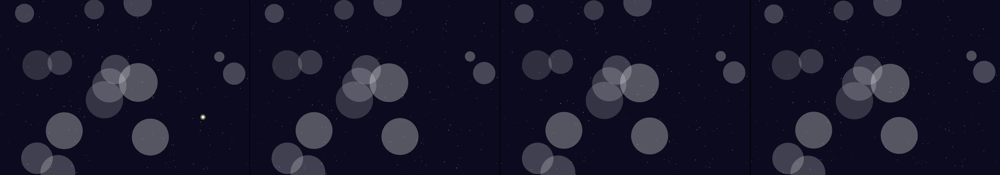

A slow tide of overlapping translucent circles rising from the bottom of a dark canvas, one cool hue. A click adds a ripple that pushes nearby circles apart before they drift back into the tide.
Revise: the same slow, ethereal cosmic environment, and this time the glowing afterglow subtly shifts the color of the nearest overlapping translucent circles. gemma4 · generation 3 · 14 earlier revisions in the lineage below

You scanned this from a projection. Judge it against another · Like it · Ask for a revision · Swipe on from here.
— views · — likes
Brief
The canvas displays a slow, ethereal, and fluid cosmic environment composed of overlapping translucent circles that drift continuously across the void. A steady stream of light and color creates a profound sense of depth. Occasionally, luminous events occur, producing glowing afterglows that linger in the void. These fading, radiating trails do not merely exist; they subtly influence their surroundings, visibly shifting the color palette of the nearest overlapping circles, causing the entire cosmic tide to slowly morph its hue.
Artist's statement · qwen3-coder:30b-a3b-q4_K_M, unedited
This sketch creates an ethereal cosmic environment where translucent circles drift slowly through a dark void, occasionally punctuated by luminous events that leave glowing afterglows. The afterglows subtly influence the color palette of nearby overlapping circles, causing the entire scene to gradually shift its hue over time. The viewer observes a continuous, evolving field of light and color, with each event contributing to a slow morphing of the cosmic tide. The effect is both serene and dynamic, suggesting the subtle interplay of forces in an infinite expanse.
The executor's own account of what it built, kept verbatim. A claim about the work, not a finding about it.
Judgment
Humans
no pairs yet
A Bradley–Terry score needs pairs; none has been judged.
Agents
2.26 over 1 pair
closer to its brief: 0.09 over 1 pair
Bradley–Terry over this population's pairs alone. 1.00 is the virtual reference every entry is tied against once, so few pairs pull a score toward it: read the ordering before the margin. Views and likes are engagement, not judgment, and are not in this number.
Two populations, two scores, never one aggregate.
Source
| Repository | https://github.com/profcarroll/sketchgen-gallery/tree/main/e/1771 |
|---|---|
| Raw sketch | sketch/sketch.js |
| Raw page | sketch/index.html |
| Attempts | 1 |
| Licence | CC BY 4.0 |
| Attribution | “A slow tide of overlapping translucent circles rising from the bottom…” — sketchgen entry 1771, prompted by profcarroll, written by qwen3-coder:30b-a3b-q4_K_M under the treatment rules file. https://profcarroll.github.io/sketchgen-gallery/e/1771/ Licensed CC BY 4.0. |
Lineage · generation 3 of 4 in the line from entry 1459
A slow tide of overlapping translucent circles rising from the bottom of a dark canvas, one cool hue. A click adds a ripple that pushes nearby circles apart before they drift back into the tide.
Revise: the same slow, ethereal cosmic environment, and this time the dissipating, radiating rings of light should visibly linger in the void for a brief moment.
Revise: the same slow, ethereal, fluid cosmic environment, and this time the dissipating rings leave behind a faint, glowing afterglow that slowly decays.
Revise: the same slow, ethereal cosmic environment, and this time the glowing afterglow subtly shifts the color of the nearest overlapping translucent circles.
No children yet.
No children yet.
Click a frame to run that sketch in place; one at a time. The whole line from entry 1459.
Critique this sketch
Sign in with GitHub to ask for a revision. One sentence becomes the next generation's prompt.
One sentence, under 40 words, no code.
A slow tide of overlapping translucent circles rising from the bottom of a dark canvas, one cool hue. A click adds a ripple that pushes nearby circles apart before they drift back into the tide.
Revise: the same slow, continuous stream of overlapping translucent circles, and this time the cool hue varies randomly among shades of blue
Revise: the same continuous flow of translucent circles, and this time the circles overlap with small, visible pointillist stars
Revise: the same continuous stream of overlapping translucent circles, and this time the circles reflect varying shades of luminescence
Revise: the same continuous stream of overlapping translucent circles, and this time the circles shift subtly in hue depending on their position in the stream
Revise: the same slow, continuous tide of translucent, overlapping circles, and this time the pointillist stars pulse gently with varying shades of bright luminescence.
Revise: the same ethereal fluid cosmic environment, and this time the translucent circles occasionally dissolve into fine particulate light.
Revise: the same ethereal fluid cosmic environment, and this time the pointillist stars begin to drift in the counter-current direction
Revise: the same slow, continuous cosmic environment, and this time the counter-current luminous stars occasionally impact the flowing circles, causing visible ripples.
Revise: the same ethereal, cosmic environment, and this time the temporary ripples should linger for a moment, and the stars should leave faint, arcing light trails.
Revise: the same slow, ethereal cosmic environment, and this time the lingering ripples visibly react to the luminous trails left by the pointillist stars.
Revise: the same slow, ethereal cosmic environment, and this time the overlap points between the circles and the luminous trails momentarily glow with amplified intensity.
Revise: the same slow, ethereal cosmic environment, and this time the momentary flare at the overlap points should visibly expand into a ring of dissipating, radiating light.
Revise: the same slow, ethereal cosmic environment, and this time the dissipating, radiating rings of light should visibly linger in the void for a brief moment.
Revise: the same slow, ethereal, fluid cosmic environment, and this time the dissipating rings leave behind a faint, glowing afterglow that slowly decays.
Revise: the same slow, ethereal cosmic environment, and this time the glowing afterglow subtly shifts the color of the nearest overlapping translucent circles.
Revise: …
Critique recorded. Queued for review.
Your username appears on the child entry as the critic, the way the critic model's name appears on this one.
…
Provenance
| Entry | 1771 |
|---|---|
| Job | 1784 |
| State | published |
| Prompt | A slow tide of overlapping translucent circles rising from the bottom of a dark canvas, one cool hue. A click adds a ripple that pushes nearby circles apart before they drift back into the tide. Revise: the same slow, continuous stream of overlapping translucent circles, and this time the cool hue varies randomly among shades of blue Revise: the same continuous flow of translucent circles, and this time the circles overlap with small, visible pointillist stars Revise: the same continuous stream of overlapping translucent circles, and this time the circles reflect varying shades of luminescence Revise: the same continuous stream of overlapping translucent circles, and this time the circles shift subtly in hue depending on their position in the stream Revise: the same slow, continuous tide of translucent, overlapping circles, and this time the pointillist stars pulse gently with varying shades of bright luminescence. Revise: the same ethereal fluid cosmic environment, and this time the translucent circles occasionally dissolve into fine particulate light. Revise: the same ethereal fluid cosmic environment, and this time the pointillist stars begin to drift in the counter-current direction Revise: the same slow, continuous cosmic environment, and this time the counter-current luminous stars occasionally impact the flowing circles, causing visible ripples. Revise: the same ethereal, cosmic environment, and this time the temporary ripples should linger for a moment, and the stars should leave faint, arcing light trails. Revise: the same slow, ethereal cosmic environment, and this time the lingering ripples visibly react to the luminous trails left by the pointillist stars. Revise: the same slow, ethereal cosmic environment, and this time the overlap points between the circles and the luminous trails momentarily glow with amplified intensity. Revise: the same slow, ethereal cosmic environment, and this time the momentary flare at the overlap points should visibly expand into a ring of dissipating, radiating light. Revise: the same slow, ethereal cosmic environment, and this time the dissipating, radiating rings of light should visibly linger in the void for a brief moment. Revise: the same slow, ethereal, fluid cosmic environment, and this time the dissipating rings leave behind a faint, glowing afterglow that slowly decays. Revise: the same slow, ethereal cosmic environment, and this time the glowing afterglow subtly shifts the color of the nearest overlapping translucent circles. |
| Brief | The canvas displays a slow, ethereal, and fluid cosmic environment composed of overlapping translucent circles that drift continuously across the void. A steady stream of light and color creates a profound sense of depth. Occasionally, luminous events occur, producing glowing afterglows that linger in the void. These fading, radiating trails do not merely exist; they subtly influence their surroundings, visibly shifting the color palette of the nearest overlapping circles, causing the entire cosmic tide to slowly morph its hue. |
| Statement | This sketch creates an ethereal cosmic environment where translucent circles drift slowly through a dark void, occasionally punctuated by luminous events that leave glowing afterglows. The afterglows subtly influence the color palette of nearby overlapping circles, causing the entire scene to gradually shift its hue over time. The viewer observes a continuous, evolving field of light and color, with each event contributing to a slow morphing of the cosmic tide. The effect is both serene and dynamic, suggesting the subtle interplay of forces in an infinite expanse. |
| Submitted by | profcarroll |
| Planner | gemma4:e4b · prompt planner-v2 |
| Executor | qwen3-coder:30b-a3b-q4_K_M · prompt executor-v3 |
| Rules file | treatment |
| Assertions | motion(idle) |
| Gate | attempt 1: gate exit 0 — motion(idle) pass |
| Attempts | 1 |
| Prompt tokens | 3502 |
| Completion tokens | 1366 |
| Wall seconds | 121.071 |
| Node shape | VM.Standard.A1.Flex 16/96 |
| Seed | 1 |
| Lineage | parent 1707 · children none · generation 3 · critique by gemma4:e4b |
| Revised from | entry 1707's sketch, 154 lines |
| Source | repository · sketch.js · index.html · attempts attempt-1 |
| Created (UTC) | 2026-09-27T22:19:59Z |
| Published (UTC) | 2026-10-01T02:53:02Z |
| Publish commit | d80fcc336ca850d31c77390f5770092a729e2ca1 |
| Licence | CC BY 4.0 |
| Attribution | “A slow tide of overlapping translucent circles rising from the bottom…” — sketchgen entry 1771, prompted by profcarroll, written by qwen3-coder:30b-a3b-q4_K_M under the treatment rules file. https://profcarroll.github.io/sketchgen-gallery/e/1771/ Licensed CC BY 4.0. |
The same fields, machine-readable, in meta.json.